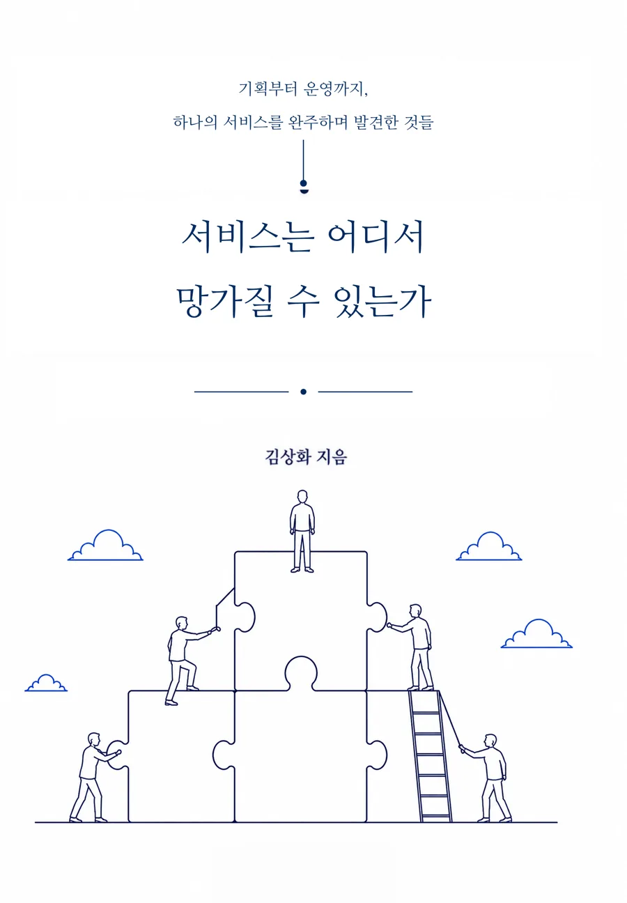

실행의 연결 지점
기획이 문서에 머물지 않도록
완성까지 이어지는 조건을 관리합니다
조직이 얻는 변화
기획·개발 사이의 논의가 빨라집니다.
화면과 정책을 기술 조건까지 연결해 쟁점을 구체화합니다.
보안과 운영의 빈틈을 초기에 줄입니다.
개인정보·권한·예외·운영 조건을 개발 전에 함께 검토합니다.
여러 담당자가 한 기준으로 움직입니다.
내부 조직과 협력사의 역할·일정·검수 기준을 명확히 맞춥니다.
01 / 05
핵심 역량
한 사람 안에서 네 가지 역량이
끊김 없이 이어집니다
기획, 기술 소통, 협력사 관리, 보안·개인정보보호를 따로 넘기지 않고 하나의 프로젝트 기준으로 연결합니다.
01서비스 전략 · 프로젝트 관리
끝을 아는 기획
문제 정의와 정책·화면·범위·일정·검수·운영까지 서비스의 전체 생애주기를 관리합니다.
- 할 수 있는 일
- 요구사항, 정책, 화면, 관리자 기능, 일정과 위험 관리
- 기대 효과
- 기획 의도가 출시와 운영 과정에서 흐려지지 않습니다.
02기술 이해 · 실행 검증
기술의 언어로 판단하는 PM
개발 구조와 구현 원리를 이해하고, 필요하면 바이브 코딩으로 시제품을 직접 만들며 아이디어의 실현 가능성을 빠르게 확인합니다.
- 기여 방식
- 요구사항을 구조화하고 화면·데이터·연동·예외 조건을 개발 조직과 함께 검증
- 강점
- 직접 구현 자체보다 기획과 개발 사이의 간극을 줄이고 합리적인 기술 판단을 돕는 역할
03협력사 · 이해관계자 조율
여러 팀을 한 일정으로 움직이는 리딩
내부 조직과 외부 협력사의 역할·의사결정권·검수 기준을 분명히 나누고 쟁점을 끝까지 관리합니다.
- 할 수 있는 일
- 역할과 책임, 일정, 회의체, 이슈·변경·품질 관리
- 기대 효과
- 담당자 사이의 공백과 뒤늦은 재협의를 줄입니다.
04정보보안 · 개인정보보호
보안을 나중에 붙이지 않는 설계
현재 정보보안·개인정보보호 담당자로서 개인정보 흐름, 권한, 위탁, 로그, 법적 준수 조건을 기획 단계부터 반영합니다.
- 할 수 있는 일
- 개인정보 처리 흐름, 접근권한, 위탁, 로그, 사고 대응 조건 검토
- 기대 효과
- 출시 직전 발견되는 보안·운영 위험을 앞단에서 줄입니다.
02 / 05
경력으로 확인되는 근거
넓게 경험했고,
한 조직에서는 깊게 책임졌습니다
과장된 추정치보다 실제 근속과 담당 역할, 출시 사례와 외부 검증으로 역량을 보여드립니다.
운영에서 시작해 기획·PM, 조직 IT와 보안으로 역할을 확장했습니다.
업무와 사람을 깊이 이해하며 운영자에서 프로젝트 책임자로 성장했습니다.
서로 다른 조직의 의사결정 방식과 실행 조건을 경험했습니다.
신규 서비스 기획과 정보보안·개인정보보호 업무를 함께 맡고 있습니다.
경력에서 확인되는실제 결과
- 나의AAC 출시
- 가치지음 멤버십 추진
- 조직 IT·보안 운영
- 국내외 디자인·서비스 수상
03 / 05
역량이 함께 작동한 사례
기획만 한 것이 아니라,
실행 조건까지 함께 만들었습니다
각 사례는 서비스 기획·기술 소통·협력사 조율·보안과 운영이 함께 작동한 결과입니다.
2026
가치지음 멤버십
회원가입과 관리자 CMS를 실제 운영할 수 있도록 정책·화면·개발·개인정보 처리 기준을 함께 설계하고 있습니다.
- 기획 × 보안동의·상태·권한·개인정보 처리 기준을 화면 설계보다 먼저 정리
- 기술 × 운영회원 관리·검색·분류 기능을 관리자 업무 흐름과 연결
- 프로젝트 리딩요구사항과 개발 일정, 검수·운영 조건의 의사결정 기준 관리
2021.10–2024.03
나의AAC
서비스 정의부터 협력사 개발·검수·출시·운영 준비까지 총괄해 2024년 3월 10일 출시했습니다.
- 기획 × 기술조작 부담과 접근성 기준을 기능 우선순위와 검수 조건으로 구체화
- 협력사 리딩장기 프로젝트의 범위·일정·쟁점·의사결정 이력을 끝까지 관리
- 출시 × 운영앱과 관리자 기능, 검수·배포·운영 준비를 하나의 일정으로 연결
2021.10–현재
조직 IT·보안 운영
서버·네트워크·업무 도구 운영과 정보보안·개인정보보호를 함께 담당하며 서비스의 기반을 관리합니다.
- 기술 × 운영서버·네트워크·클라우드·업무 소프트웨어·전산 장비 운영
- 보안 × 개인정보계정·권한·로그·개인정보 처리와 법적 준수 조건 검토
- 현장 기여서비스 자문부터 장비·계정·네트워크 문제까지 동료의 업무 공백을 직접 지원
2018
서비스데스크 2.0
요청자와 처리자의 실제 업무를 분석해 접수·배정·처리·통계와 관리자 운영 구조를 다시 설계했습니다.
- 업무 분석 × 기획반복 문의와 처리 지연의 원인을 화면이 아닌 업무 절차에서 정의
- 사용자 × 운영자요청 유형·상태·알림·통계를 양쪽의 업무 흐름으로 연결
- 운영 자율성운영자가 개발 요청 없이 업무 항목을 조정할 수 있는 관리 구조 설계
기타 참여 프로젝트
공익 서비스 · 조직 시스템 · 현장·모바일
04 / 05
경력
운영을 이해하는 기획자에서
실행을 책임지는 리더로
현장에서 운영을 배웠고, 서비스 기획과 프로젝트 관리로 역할을 넓혔습니다. 현재는 조직 IT와 정보보안·개인정보보호까지 함께 담당합니다.
'21.10~현재엔씨 문화재단경영지원팀(멤버십팀 겸직) · 매니저비영리재단약 5년+
나의AAC 총괄 PM, 가치지음 멤버십 기능 추진, 재단 웹서비스 운영과 함께 서버·네트워크·업무 도구·정보보안·개인정보보호를 담당합니다.
서비스 의사결정부터 노트북·계정·네트워크 문제와 보안 자문까지, IT와 관련된 일이 생기면 동료들이 먼저 찾는 역할을 해왔습니다.
합류 배경본사 평가팀에서 함께 일했던 동료가 먼저 재단에 합류한 뒤, 당시의 협업 경험을 바탕으로 나의AAC 앱 구축을 제안했습니다. 비영리 조직에서 서비스를 만드는 방식에 대한 호기심과 앱을 성공적으로 완성하고 싶다는 목표로 합류했습니다. 현재는 그 동료가 경영지원팀을 이끌고 있으며, 같은 팀에서 조직 IT와 가치지음 멤버십팀까지 역할을 넓히고 있습니다.
서비스 PM조직 IT정보보안개인정보보호'20.12~'21.10프레임아웃Insight & Planning Team · 매니저(과장)디지털 에이전시약 1년+
LG U+ 관련 서비스, 온라인 보험, 한살림 장보기·생활쇼핑 등 여러 고객사의 디지털 서비스에서 요구사항·정책·화면·운영 흐름을 기획했습니다.
서로 다른 산업의 고객·사용자·개발 조건을 짧은 시간 안에 이해하고, 화면과 정책 문서로 구체화했습니다.
합류와 이동다양한 산업과 서비스 경험을 넓히기 위해 지원했고, 엔씨 ITS에서 쌓은 관리자·ERP 기획 경험을 인정받아 LG U+ 사업에 투입되었습니다. 이후 나의AAC 구축 제안을 받아 엔씨 문화재단으로 이동했습니다.
웹·모바일 기획고객 협의화면 설계'19.12~'20.08아라소프트개발3팀 · 과장소프트웨어 개발사약 1년+
미세먼지 앱 서비스와 버스터미널 안내 프로그램 개선 등 모바일·현장 서비스의 요구사항과 화면, 개발 협업을 담당했습니다.
모바일 앱과 키오스크처럼 사용 환경이 분명한 서비스에서 기획과 개발 사이의 실행 조건을 조율했습니다.
합류와 이동재도약을 준비하던 작은 개발사의 대표로부터 제안을 받아 합류했습니다. 회사 경영 상황이 어려워지고 근무지가 장거리 통근이 필요한 곳으로 이전하면서 퇴사를 결정했습니다.
앱 서비스현장 서비스개발 협업'11.04~'19.12엔씨 ITS개발실 기획팀 · 과장그룹 IT 서비스약 9년+
'11.04~'12.12(주)그린맨파워 소속 · 엔씨 ITS 파견 · 운영팀 주임
'13.01~'19.12엔씨 ITS · 개발실 기획팀 과장
같은 근무지에서 사내 IT 서비스 운영으로 시작해 프로젝트 관리로 역할을 확장했습니다. 서비스데스크, 전자결재, 채용(입사지원·채용관리), 평가, 연말정산, 자산, 출입통제, 프로야구단 관련 서비스 등을 담당했습니다.
약 9년 동안 같은 현장의 업무와 사람을 깊이 이해하며 운영자에서 프로젝트 기획·관리 책임자로 성장했습니다.
다음 선택장기 근속으로 쌓은 운영·기획 경험을 바탕으로, 더 작은 개발 조직에서 제품과 개발 과정에 가까이 참여해 달라는 제안을 받아 이동했습니다.
IT 운영프로젝트 관리사내 시스템협력사 관리검증
외부에서 확인된 결과
설명보다 먼저 확인할 수 있는
공식 경력 인증과 수상입니다
소프트웨어 진흥법에 근거한 경력증명서로 전 근무 경력이 확인되며, 나의AAC와 참여 서비스가 받은 디자인·서비스 분야 수상과 네 가지 기기 환경의 모바일 접근성 인증을 공식 자료와 함께 정리했습니다.
공식 인증 · 소프트웨어 진흥법소프트웨어기술자
소프트웨어기술자
경력증명서
전 근무 경력과 수상 이력을 공적 기관이 확인
2025 · 국제 디자인 검증iF DESIGN AWARD
iF DESIGN AWARD
WINNER
나의AAC · 사용자 경험(UX) / 커뮤니케이션 UX
2024 · 서비스 성과인터넷에코어워드
인터넷에코어워드
사회적약자지원분야 대상
보완대체의사소통 서비스 나의AAC
2024 · 서비스 성과스마트앱어워드 코리아
스마트앱어워드 코리아
비영리기관분야 대상
보완대체의사소통 서비스 나의AAC
2024 · 4개 환경 인증모바일 앱
모바일 앱
접근성 인증
모바일·태블릿 × Android·iOS
2021 · 참여 프로젝트웹어워드 코리아
웹어워드 코리아
한살림
공식 증서 대신 포트폴리오의 수상 기록을 재구성한 화면

프로젝트 기록
IT 경험이 없는 조직에서 서비스를 만든다는 것
비영리 조직에서 신규 서비스를 기획하고 출시·운영하기까지, 프로젝트 관리 과정에서 내린 판단과 시행착오를 한 권의 기록으로 정리했습니다.
책 소개 보기05 / 05
김상화가 리더로 합류했을 때
팀이 더 빠르고 안전하게
실행할 수 있는 기준을 만듭니다
실무를 놓지 않되 모든 일을 혼자 쥐지 않습니다. 우선순위와 의사결정권을 분명히 하고, 구성원이 같은 기준으로 끝까지 실행하도록 돕습니다.
판단
무엇을 먼저 해결해야 하는지, 지금 결정할 것과 검증할 것을 구분합니다.
설계
사용자 흐름뿐 아니라 정책·데이터·예외·관리자 운영까지 한 구조로 봅니다.
조율
기획·개발·운영·보안·외부 협력사의 언어를 실행 가능한 기준으로 맞춥니다.
운영
출시를 끝으로 보지 않고 권한·문의·장애·개선 요청이 이어지는 조건을 준비합니다.
역량의 균형
화면을 설계하는 기획자에서,
실행을 끝까지 책임지는 리더로
프로젝트 관리와 서비스 기획을 중심으로 운영·보안·기술 협업까지 역할을 넓혀 왔습니다.
- 프로젝트 관리범위·일정·협력사·위험
- 서비스 기획·설계정책·화면·관리자·예외
- 리더십·협업의사결정 기준과 조율
- 제품 관리·운영출시 이후 권한·장애·개선
- 정보보안·개인정보보호현재 담당 업무와 서비스 반영
- 기술 이해·개발 협업연동·데이터·검증 조건
업무 판단 기준
경험을 다음 결정의 기준으로 남깁니다
- 문제가 생기면 직접 파고드는 편초기 대응 뒤에는 담당과 의사결정권을 다시 나눠 병목을 줄입니다.
- 공익·사내 서비스 경험이 중심대규모 소비자 지표보다 활성화·이탈·운영 맥락으로 성과를 해석합니다.
- 기술을 이해하지만 개발자는 아님연동·데이터·예외·검증 조건을 구조화하고 기술 판단은 개발자와 교차 검토합니다.
- 결과가 달라도 일의 기준은 흔들지 않음성과는 과장하지 않고, 실패의 원인은 다음 프로젝트의 판단 기준으로 남깁니다.
01서비스·프로젝트 기획+
정보 구조, 요구사항, 정책, 화면, 업무 흐름, 관리자 기능을 설계하고 범위·제안요청서·계약·일정·위험·협력사 관리를 연결합니다.
02인프라·조직 IT 운영+
서버, 네트워크, 클라우드, 업무 소프트웨어, 자산, 출입통제를 운영하고 대외 서비스의 기술 의사결정을 지원합니다.
03정보보안·개인정보보호+
법령 준수, 개인정보 처리 흐름, 위탁, 권한, 로그, 사고 대응 조건을 서비스와 운영 과정에 반영합니다.
04협업 도구와 문서화+
Figma, Jira, Confluence, Redmine, GitLab, Notion, Excel, PowerPoint를 프로젝트 상황에 맞춰 사용합니다. 학력은 경영학 학사이며 컴퓨터공학을 공부했습니다.
다음 프로젝트
기획서가 실제 운영 가능한 서비스가 되는 과정,
함께 만들겠습니다.
기획·기술·보안·협력사 사이의 복잡한 문제를 한 기준으로 연결하겠습니다.